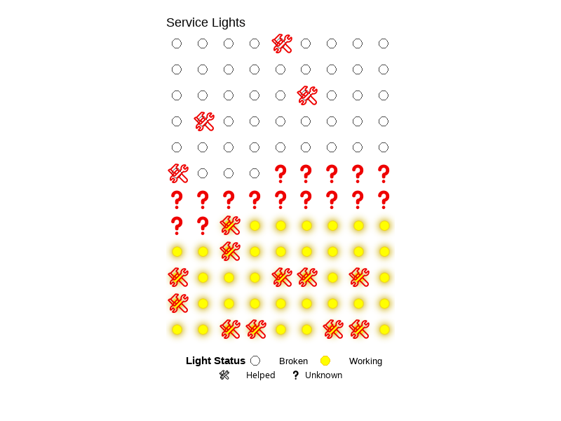

# Load packages for data, plots, effects, and animation
library(tidyverse) # Data wrangling and ggplot2 visualization
library(here) # Helps keep file paths consistent
library(flextable) # Creates tables
library(janitor) # Cleans column names
library(ggtext) # Styled/markdown text in ggplots
library(ggfx) # For visual effects for ggplot
library(gganimate) # Animation for ggplots
library(showtext) # Render text and emojis in plots better
# Turn on showtext for smoother font/emoji rendering in plots
showtext_auto()
# Optional: Use this only if emojis don't show up correctly in saved plots
font_add("emoji", "seguiemj.ttf")
service_data <- read_csv(here("data", "service_data.csv"))Homework 3
ENVS-193DS
Part 1. Setup tasks
GitHub repository: https://rebeccalmartinez.github.io/ENVS-193DS_homework-03/
Part 2. Problems
Problem 1. Personal data
insta #### a. Data summarizing
I could count the number of service calls where help was or wasn’t needed, grouped by whether the light was working or broken. Comparing these groups is informative because a broken light might influence whether guests mistakenly request help.
b. Visualizations
Code for cleaning data:
# Clean and standardize help and working columns
clean_service_data <- service_data |> # using service_data set
mutate(
# Convert values to uppercase to avoid issues with lowercase na
help = toupper(help),
working = toupper(working),
# Convert the uppercase text to logical TRUE/FALSE values
help = as.logical(help),
working = as.logical(working))# Create a stacked bar chart to compare how often help was or wasn't needed
# across two conditions: working lights vs broken lights
ggplot(clean_service_data, aes(x = working, fill = help)) +
# Use stacked bars with slimmer width and black borders for clarity
geom_bar(position = "stack", width = 0.6, color = "black") +
# Add counts inside each bar segment
geom_text(
# Count the number of rows per group
stat = "count",
# Display the count as text
aes(label = after_stat(count)),
# Position in each stacked segment
position = position_stack(vjust = 0.5),
# text color and size
color = "black",
size = 4
) +
# Assign color to and titles to stacked bars
scale_fill_manual(
values = c("TRUE" = "forestgreen", "FALSE" = "red"),
labels = c("Help Not Needed", "Help Needed")
) +
# Replace raw logical values with clearer labels for x-axis categories
scale_x_discrete(labels = c("TRUE" = "Working", "FALSE" = "Broken")) +
# Force y-axis to start at 0
scale_y_continuous(limits = c(0, 50), expand = c(0, 0)) +
# Set axis labels and title
labs(
x = "Light Condition",
y = "Number of Service Calls",
title = "Service Calls by Light Condition and Help Status"
) +
# Apply a minimal, clean theme and customize layout
theme_classic() +
theme(
# Center and bold the title
plot.title = element_text(face = "bold", hjust = 0.5, size = 16),
# Bold axis labels
axis.title = element_text(face = "bold"),
# Move legend to top-right
legend.position = c(0.95, 0.95),
# Align legend corner
legend.justification = c("right", "top"),
# Remove title
legend.title = element_blank()
)
c. Caption
Figure 1. False service calls were more common when the light was broken. Stacked bars show the number of service calls under each light condition (Working vs. Broken), split by whether help was actually needed (green) or not (red). Out of 49 broken service lights, 45 did not require help and only 4 did. Out of 43 working service lights, 32 did not require help and 11 did. An additional 16 cases had unknown light status (and are not shown in the figure (gray).
d. Table presentation
#
# Create a summary table that counts how often help was or wasn’t needed,
# grouped by the condition of the service light (working, broken, or unknown)
help_summary <- clean_service_data |>
mutate(
# Turn the 'working' column into clear labels for light condition
light_status = case_when(
working == TRUE ~ "Working",
working == FALSE ~ "Broken",
is.na(working) ~ "Unknown"
),
# Turn the 'help' column into clear labels for help status
help_status = case_when(
help == TRUE ~ "Help Needed",
help == FALSE ~ "No Help Needed",
is.na(help) ~ "Unknown Help"
)
) |>
# Count how many service calls fall into each combination of light and help status
count(light_status, help_status) |>
# Rearrange the data so each help type becomes its own column
pivot_wider(
names_from = help_status,
values_from = n,
values_fill = 0 # if a group doesn’t exist, fill it with 0
)
# Make sure all expected help categories are included (even if not present in the data)
for (col in c("Help Needed", "No Help Needed", "Unknown Help")) {
if (!col %in% names(help_summary)) {
help_summary[[col]] <- 0
}
}
# Order the rows so "Working" comes first and "Unknown" is last,
# then select and reorder columns for readability
help_summary <- help_summary |>
mutate(light_status = factor(light_status, levels = c("Working", "Broken", "Unknown"))) |>
arrange(light_status) |>
select(light_status, `Help Needed`, `No Help Needed`, `Unknown Help`) |>
# Add a new column that totals the calls for each light condition
mutate(`Total Calls` = `Help Needed` + `No Help Needed` + `Unknown Help`)
# Format the summary table for display using flextable
help_summary |>
flextable() |>
set_header_labels(light_status = "Light Condition") |>
autofit() |>
set_caption("Table 1. Service calls by light condition and whether help was needed.")Light Condition | Help Needed | No Help Needed | Unknown Help | Total Calls |
|---|---|---|---|---|
Working | 11 | 32 | 0 | 43 |
Broken | 4 | 45 | 0 | 49 |
Unknown | 0 | 0 | 16 | 16 |
Problem 2. Affective visualization
a. Describe in words what an affective visualization could look like for your personal data
I could draw a light board or circuit board that shows which service lights were working and which were not. Each light would be a circle or dot, with different colors based on their status. I would add a symbol like an exclamation point for cases where help was needed, and a question mark for unknowns. It would look more like the data it represents.
b. Create a sketch (on paper) of your idea.
My affective visualization sketch:

c. Make a draft of your visualization
# Clean and transform data to prepare for lightboard
clean_lights <- service_data |>
mutate(
# Convert values to logical (TRUE/FALSE/NA)
help = as.character(help),
working = as.character(working),
help = ifelse(help %in% c("T", "TRUE"), TRUE,
ifelse(help %in% c("F", "FALSE"), FALSE, NA)),
working = ifelse(working %in% c("T", "TRUE"), TRUE,
ifelse(working %in% c("F", "FALSE"), FALSE, NA)),
# Define status labels for light states
status = case_when(
is.na(working) ~ "Unknown",
working ~ "Working",
!working ~ "Broken"
),
# Assign color to each light status
color = case_when(
status == "Working" ~ "yellow",
status == "Broken" ~ "white",
status == "Unknown" ~ "gray79"
),
# Add emoji symbols to represent help requests or unknowns
symbol = case_when(
is.na(working) ~ "❓",
help == TRUE ~ "üõ†Ô∏è",
TRUE ~ ""
)
) |>
arrange(status) # Arrange so similar statuses appear together on the board# Add position and ID for each light on the grid
glow_lights <- clean_lights |>
mutate(
light_id = row_number(),
x = (light_id - 1) %% 9, # 9 lights per row
y = -((light_id - 1) %/% 9) # create rows top to bottom
)
# Create "on" version (all lights visible)
lights_on <- glow_lights |>
mutate(blink_state = "on")
# Create "off" version (only hide working lights)
lights_off <- glow_lights |>
mutate(
blink_state = "off",
status = ifelse(status == "Working", NA, status)
)
# Combine both states for animation
blinking_glow_lights <- bind_rows(lights_on, lights_off)
# Create the blinking lightboard plot
blink_plot <- ggplot(blinking_glow_lights, aes(x, y)) +
# Add glow effect to working (yellow) lights
with_outer_glow(
geom_point(
data = subset(blinking_glow_lights, status == "Working"),
aes(fill = status, group = light_id),
shape = 21,
size = 6,
color = "gold2",
stroke = 0.5,
na.rm = TRUE
),
colour = "gold3",
sigma = 5,
expand = 2
) +
# Add static (non-working/unknown) lights
geom_point(
data = subset(blinking_glow_lights, !status %in% c("Working") & !is.na(status)),
aes(fill = status),
shape = 21,
size = 6,
color = "gray30",
stroke = 0.5
) +
# Overlay emoji symbols
geom_text(
aes(label = symbol),
family = "emoji",
size = 7,
fontface = "bold",
color = "red2",
na.rm = TRUE
) +
# Set colors and labels for legend
scale_fill_manual(
values = c(
"Working" = "yellow",
"Broken" = "white",
"Unknown" = "gray79"
),
name = "Light Status"
) +
coord_fixed() + # Keep square grid cells
# Add title and caption
labs(
title = "Service Lights",
caption = "üõ†Ô∏è Helped ❓ Unknown"
) +
# Simplify background and layout
theme_void() +
theme(
legend.position = "bottom",
legend.title = element_text(face = "bold"),
legend.text = element_text(size = 10),
legend.key.width = unit(2, "cm"),
plot.caption = element_text(family = "emoji", size = 10, hjust = 0.5),
plot.background = element_rect(fill = "white", color = NA),
plot.margin = margin(20, 20, 60, 20), # Extra space for legend/caption
legend.box.margin = margin(t = 10)
) +
# Animate blinking by switching between states
transition_states(blink_state, wrap = TRUE) +
ease_aes("linear")# Save the animation to a GIF (run this manually in Console)
# Do not run during Quarto rendering or it may crash
animate(
blink_plot,
fps = 4, # Frames per second
nframes = 8, # Total frames
width = 800,
height = 600,
renderer = gifski_renderer("blinking_lights.gif")
)
d. Write an artist statement.
This project shows service lights as a grid, using colors to show if they were working, broken, or unknown. It also uses symbols to show if help was needed. I was inspired by lightboards, slot machines, and visualizations that use color, or lack thereof, to represent data in unique ways. I made this using R code, with tools like ggplot, gganimate, and ggfx. The final result is an animated GIF. I cleaned my data and grouped each light by status. I gave each one a color and symbol, then added animation to make the working lights blink and glow.
Problem 3. Statistical Critique
a. Revisit and Summarize
The study includes linear mixed models with the decay constant (k) as the response variable, representing the rate of litter decomposition, and predictor variables including litter type and placement. The authors also use regression analyses with nitrogen and phosphorus concentrations in litter as response variables, and the percentage of litter mass remaining as the predictor variable. These statistical tests compare decomposition rates and nutrient dynamics between buried litter (under gopher mounds) and surface litter. A significant result (p < 0.05) would support the hypothesis that gopher bioturbation accelerates decomposition and nutrient turnover, while also helping to conserve nutrients in fire-prone ecosystems.
b. Visual clarity
The figure is generally clear. The x-axis represents cumulative litter mass remaining (%) and the y-axis shows nitrogen concentration (%N), with regression lines displayed for each treatment. The authors include R² values for each line, though the actual regression statistics are not provided in the caption—instead, readers are directed to a separate table. Data points and regression lines are overlaid effectively, and the use of faceting by litter type helps isolate trends.
c. Aesthetic clarity
The authors managed visual clutter reasonably well. Faceting helps separate the litter types clearly, and colors are used consistently to distinguish between surface and buried litter. However, some overlapping data points make it difficult to assess point density. A slight increase in transparency could better represent clustering without adding visual noise.
d. Recommendations
The figure is already divided into three panels by leaf type (pine, oak, and mixed), so using both color and shape to represent leaf type within each panel is visually redundant. Meanwhile, surface and buried treatments are only distinguished by slight variations in color shade, which can be difficult to interpret—especially for anyone with color vision impairments.
To improve clarity and accessibility, I recommend keeping the current color scheme but using different shapes to indicate treatment (e.g., circles for surface, triangles for buried). This would make it easier to distinguish between treatments within each panel and to visually compare them across leaf types. As noted in Part 3c, adjusting transparency (alpha) could also help visualize data point density.
Finally, while the figure includes R² values for the regression lines, it might be more helpful to include the other core statistics directly in the caption rather than requiring readers to cross-reference a separate table.